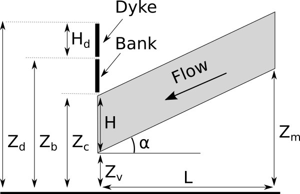
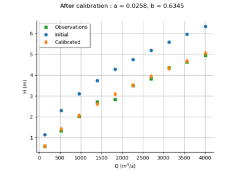

A flood model¶
Introduction¶
The following figure presents a dyke protecting industrial facilities. When the river level exceeds the dyke height, flooding occurs. The model is based on a crude simplification of the 1D hydrodynamical equations of Saint-Venant under the assumptions of uniform and constant flow rate and large rectangular sections.

Flooding section¶
Four independent random variables are considered:
: flow rate
: Strickler
: downstream height
: upstream height
![[m^3 s^{-1}]]()
![[m^{1/3} s^{-1}]]()
When the Strickler coefficient increases, the riverbed generates less friction.
The model depends on four parameters:
the height of the dyke:

,
the altitude of the river banks:

the river length:

the river width:

The altitude of the dyke is:

The slope  of the river is assumed to be close to zero, which implies:
of the river is assumed to be close to zero, which implies:

if  .
The water depth is:
.
The water depth is:
![H = \left(\frac{Q}{K_s B \sqrt{\alpha}}\right)^{0.6},]()
for any  .
The flood altitude is:
.
The flood altitude is:

The altitude of the surface of the water is greater than the altitude of the top of the dyke (i.e. there is a flood) if:

is greater than zero.
The following figure presents the model with more details.

Flooding section detail¶
If we substitute the parameters into the equation, we get:
![S = \left(\frac{Q}{300 K_s \sqrt{\frac{Z_m - Z_v}{5000}}}\right)^{3/5} + Z_v - 58.5.]()
We assume that the four inputs have the following distributions:
Moreover, we assume that the input random variables are independent.
We want to estimate the flood probability:

Analysis of the calibration problem¶
In this section, we analyse why calibrating the parameters of this model may raise some difficulties.
First, the slope only depends on the difference  .
This is why and cannot be identified at the same time.
In algebraic terms, there is an infinite number of couples
.
This is why and cannot be identified at the same time.
In algebraic terms, there is an infinite number of couples  which
generate the same difference .
which
generate the same difference .
Second, the denominator of the expression of  involves the product
involves the product
 .
In algebraic terms, there is an infinite number of couples
.
In algebraic terms, there is an infinite number of couples  which
generate the same product
which
generate the same product  .
This is why either or can be identified separately,
but not at the same time.
This shows that only one parameter can be identified.
.
This is why either or can be identified separately,
but not at the same time.
This shows that only one parameter can be identified.
Hence, calibrating this model requires some regularization which can be done by Bayesian methods.
References¶
API documentation¶
- class FloodModel(L=5000.0, B=300.0, trueKs=30.0, trueZv=50.0, trueZm=55.0)
Data class for the flood model.
- Parameters:
- Lfloat, optional
Length of the river. The default is 5000.0.
- Bfloat, optional
Width of the river. The default is 300.0.
- trueKsfloat, optional
The true value of the Ks parameter. The default is 30.0.
- trueZvfloat, optional
The true value of the Zv parameter. The default is 50.0.
- trueZmfloat, optional
The true value of the Zm parameter. The default is 55.0.
Examples
>>> from openturns.usecases import flood_model >>> # Load the flood model >>> fm = flood_model.FloodModel() >>> print(fm.data[:5]) [ Q ($m^3/s$) H (m) ] 0 : [ 130 0.59 ] 1 : [ 530 1.33 ] 2 : [ 960 2.03 ] 3 : [ 1400 2.72 ] 4 : [ 1830 2.83 ] >>> print("Inputs:", fm.model.getInputDescription()) Inputs: [Q,Ks,Zv,Zm] >>> print("Parameters:", fm.model.getParameterDescription()) Parameters: [B,L] >>> print("Outputs:", fm.model.getOutputDescription()) Outputs: [H]
- Attributes:
- dimThe dimension of the problem
dim=4
- Q
TruncatedDistributionof aGumbeldistribution ot.TruncatedDistribution(ot.Gumbel(558.0, 1013.0), 0.0, ot.TruncatedDistribution.LOWER)
- Ks
TruncatedDistributionof aNormaldistribution ot.TruncatedDistribution(ot.Normal(30.0, 7.5), 0.0, ot.TruncatedDistribution.LOWER)
- Zv
Uniformdistribution ot.Uniform(49.0, 51.0)
- Zm
Uniformdistribution ot.Uniform(54.0, 56.0)
- model
ParametricFunction The flood model. The function has input dimension 4 and output dimension 1. More precisely, we have
![\vect{X} = (Q, K_s, Z_v, Z_m)]() and
and
 .
Its parameters are
.
Its parameters are  .
.- distribution
ComposedDistribution The joint distribution of the input parameters.
- data
Sampleof size 10 and dimension 2 A data set which contains noisy observations of the flow rate (column 0) and the height (column 1).
Examples based on this use case¶



Calibrate a parametric model: a quick-start guide to calibration


{kind=link}